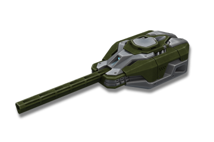
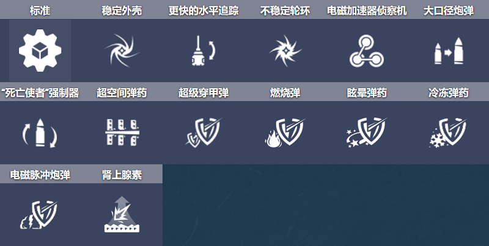
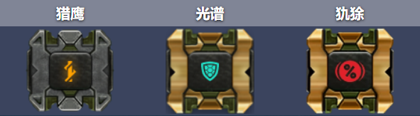
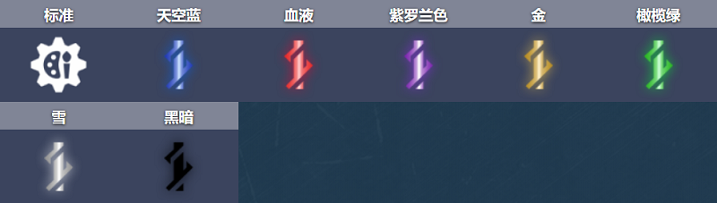
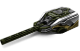
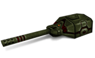
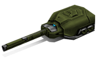
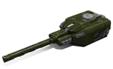

概括
激光炮是真正的多功能枪。
对于喜欢在远距离掩护下杀死敌人的露营者和在竞技场中不断移动的中场球员来说，这是一个绝佳的选择。
许多遗产都围绕着激光炮，从它的原始名称 Fear Machine（当时恰如其名，令人难以置信的强大）到它在电子竞技时代的频繁使用。
即使在今天，大多数氏族也仅依靠激光炮，只为奇怪的轰天炮偏离了方向。
炮塔虽然需要大量的加载时间和击中射击键后的一秒延迟，但能够在无限范围内造成大量伤害。
车库中的描述
远程炮塔。可以通过多个坦克射击。有一个小的发射延迟。
如果中口径炮塔无法满足您对创意的渴望，那么这款炮塔就是您的不二之选。
一个大口径炮塔，具有闪电般的枪管速度和由贫铀制成的射弹。
一种极其强大且极其精确的动力弹丸可以在任何坦克上打出一个洞，击中站在同一条线上的多个目标。
不要忘记激光炮也需要很长时间才能重新装填，并且在每次射击之前都需要做短暂的准备。
准备开火的枪管会比节日树燃烧得更亮，经验丰富的敌人可以检测到并用作优势。
使用此炮塔的技巧类似于击剑：当您与其他专为近距离设计的炮塔进行战斗时，它既美观又坚硬且笨拙。
装备改造

防御模块

射击效果

皮肤

激光炮标准

激光炮 XT

激光炮遗产

青春激光炮

激光炮超高